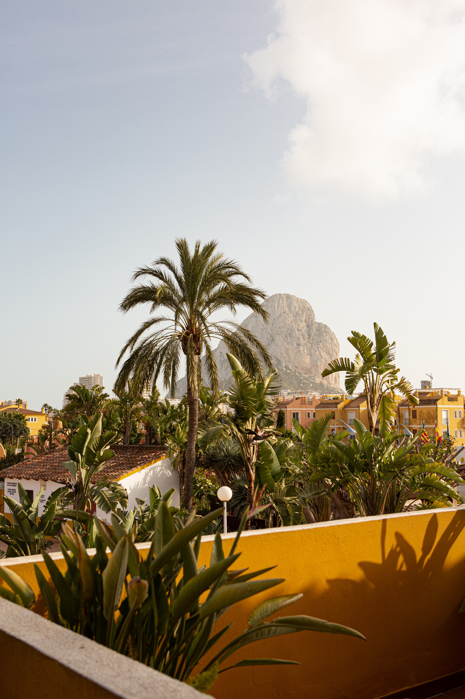

Découvre les plus beaux endroits

Italie
Les plus beaux endroits en Italie

Espagne
Les plus beaux endroits en Espagne

Grèce
Les plus beaux endroits en Grèce
Les plus beaux endroits en Italie
Les plus beaux endroits en Espagne
Les plus beaux endroits en Grèce
Les cinq terres, l’un des lieux les plus touristiques d’Italie et même d’Europe, pris d’assaut par les voyageurs du monde entier. Les Cinque Terre sont cinq villages : Monterosso, Vernazza, Corniglia, Manarola et Riomaggiore (du Nord au Sud). Leur particularité ? Ce sont des villages ultra colorés, bordés par la mer Méditerranée et construits dans un paysage montagneux et escarpé. Ils sont protégés par un parc national et classés au patrimoine mondial de l’UNESCO ! Les Cinque Terre ont bien sûr un climat méditerranéen, avec des hivers doux et des étés chauds et secs. Ils peuvent donc se visiter toute l’année en théorie, mais je vous conseillerais de partir pendant les mi-saisons : au printemps (de début mars à fin mai en évitant les jours fériés) et en automne (de fin septembre à début novembre).
Pour de nombreux français, l'Espagne se résume à Barcelone et aux îles Baléares. Pourtant, Madrid est une capitale très charmante qui possède de nombreux endroits à visiter. D'un point de vue géographique, Madrid est située à 50 kilomètres de la Sierra de Guardarrama, un massif montagneux qui culmine à plus de 2400 mètres. D'ailleurs, l'altitude moyenne de la ville s'élève à 660 mètres, ce qui fait de Madrid l'une des plus hautes capitales européennes. Réputée pour ses riches collections d’œuvres d'art, on l'apprécie aussi pour sa jolie Plaza Mayor, sa gastronomie et sa vie de quartier. On savoure l'ambiance madrilène le soir au comptoir, autour de tapas.
Santorini est une île des cyclades. Destination touristique, une question légitime à se poser quand on sait que cette île souffre du tourisme de masse quelques mois dans l’année, notamment avec les croisiéristes. En sachant cela, nous avions doute d’aimer Santorin. Mais une fois sur place, nous fûmes enchantés. Pourquoi? Parce qu’il faut admettre que l’île est magnifique. Résolument unique avec une caldeira (cratère) gigantesque formée il y a des millions d’années par une éruption volcanique. Les panoramas y sont époustouflants entre grand bleu et falaises abruptes. Et puis, le constat fut immédiat, la foule ne se concentre qu’à Oia (en hors saison) dans la partie nord de l’île. Le reste est plutôt tranquille (voir désert en avril !) Nous avons pu profiter de la majorité de ses sites avec très très peu de monde. Mais si vous désirez partir en plein Juillet/Août, je vous recommande l'île de Paros ou Naxos, tout aussi joli et moins bondé de monde.
L'Italie, l'Espagne et la Grèce sont trois destinations accessible, magnifique et qui propose des activités diversifiées. Sur quel site acheter son billet ?
Prépare ton futur voyageDe nombreux site existe comme Kayak ou encore Sckyscanner et pour réserver ton logement tu peux chercher sur les sites d'auberges de jeunesse, Booking, Airbnb ou encore Leboncoin.
Un blog de voyage peut avoir de nombreuses raisons d'être créé, nous avons créer le notre pour partager nos aventures. Si vous êtes un voyageur passionné, vous pouvez partager vos expériences et vos aventures avec les autres. Les gens adorent lire des récits de voyages, et notre blog peut inspirer les autres à voyager davantage. Aider les autres voyageurs : Nous partagons nos conseils et nos astuces pour voyager à un endroit spécifique. Les autres voyageurs peuvent ainsi bénéficier de nos connaissances et de notre expérience. Créer une communauté : En créant un blog de voyage, nous créeons une communauté de personnes partageant les mêmes intérêts. Vous pouvez discuter de vos voyages, échanger des conseils et des astuces, et peut-être même rencontrer de nouveaux amis lors de vos voyages. Alors hésitez pas à nous contacter.